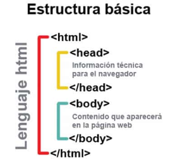
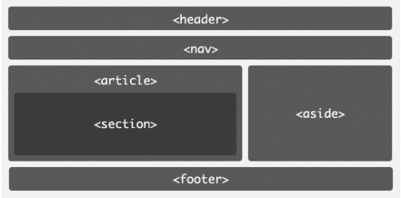

Los lenguajes HTML
Es uno de los lenguajes de marcado más usados en todo el mundo, gracias a HTML5 podemos crear la estructura de una página web. Texto, imágenes y material multimedia pueden mostrarse correctamente gracias a HTML5.
Aparte de HTML5, existen otros lenguajes que son necesarios para dar formato e interactividad a un sitio, pero la estructura básica de toda página se define primero en lenguaje HTML5.
Un lenguaje de marcado hace referencia a aquellos lenguajes que emplean etiquetas. Estas etiquetas ya están predefinidas dentro del lenguaje respectivo y contienen la información que “ayudan” a leer el texto.
No necesitas ningún tipo de programa especial para empezar a programar en HTML5, incluso puedes hacerlo en un bloc de notas, guardar el documento como HTML y podrás visualizarlo desde cualquier navegador. Sin embargo, aunque esto es posible no es realmente recomendable pues en un bloc de notas no separa las etiquetas del contenido y puede ser más complicado realizar correcciones.
Pero no necesitas ningún software costoso, puedes usar un editor de código gratuito como Notepad++ que ofrece funciones básicas como diferenciación por color entre etiquetas y contenido.
Las etiquetas HTML son fragmentos de texto rodeados por corchetes angulares < >, que tienen funciones y usos específicos y se utilizan para escribir código HTML. Las etiquetas o tags son la forma de escribir código HTML. En HTML existen etiquetas de apertura y etiquetas de cierre, tienen la forma: >etiqueta< >/etiqueta<. Donde >etiqueta< es la etiqueta de apertura y >/etiqueta< es la etiqueta de cierre indicada por la diagonal. HTML tiene definidas gran variedad de etiquetas para distintos usos.
Las etiquetas tienen atributos que nos sirven para especificar ciertos detalles de esa etiqueta, por ejemplo, especificar un color de texto o de fondo, el ancho y alto de algún elemento, su alineación, la ubicación de un documento o imagen, etc. Las etiquetas y sus atributos son la base del lenguaje HTML, y por medio de estas es como se construye una página web.
Estructura básica página HTML

Navegación externa e interna
>nav< Se usa para definir el menú o la navegación de la página. >ul< lista no ordenadas >ol< listas ordenadas >li< listas automaticas.
Estructura básica de html5
La etiqueta DOCTYPE no pasa de moda, tu documento debe empezar definiendo que tipo de documento es, de ahí que deba incluir >!DOCTYPE html<. Mientras tanto la etiqueta >HTML< se usa para abrir tu documento html.
HEAD: Es para indicar la cabeza de tu documento. No debes confundir esto con header que se define más adelante.
META. Con esto defines el tipo de codificación del documento por ejemplo utf-8
TITLE: Sirve para especificar el título del documento. Este aparece en la barra del navegador. Esta es muy importante incluirla a los documentos creados, ya que la asociamos a una identidad por medio de su título.
HEADER: En esta sección va la cabecera de tu sitio web. El nombre, slogan y logo deben ir aquí.
NAV: Es la principal barra de navegación o menú de navegación de tu sitio web. La posición y el estilo lo defines mediante CSS. Regularmente dentro de NAV estarán >ul< y >li<, que te sirven para dar forma y estilo a tu menú.
SECTION: Es la sección dónde va el contenido de tu sitio. Este a su vez puede agrupar articles
ARTICLE: Como su nombre lo indica, contiene un artículo. A su vez cada ARTICLE puede contener etiquetas >h2> para definir el título del artículo. Se recomienda que haya solo un >H1> por cada página que representa el título de tu página. A google no le gustan muchos >h1>, esto para tomarlo en cuenta en tu estrategia seo.
ASIDE: Contiene una barra lateral, como para poner enlaces a facebook, twitter y demás. Así divides el cuerpo de tu página en dos columnas. Una donde va el contenido, artículos, etc y otro donde van banners, ligas, etc.
FOOTER: Como su nombre lo indica este contiene el pie de página de tu sitio.
Estructura básica página HTML

Display: inline, block, inline-block
Los distintos elementos de HTML tienen un modo por defecto de presentarse por pantalla. Así, por ejemplo, los elementos p o h1, utilizan un área rectangular, mientras que los elementos strong o em se muestran seguidos en la pantalla.
La propiedad que se encarga de estos es display, una propiedad aparecida en CSS2 que permite establecer la forma en la que se muestra por pantalla un elemento.
inline. Los elementos con este display, se muestran sin romper la línea actual. Se muestran dentro de la línea. Por lo tanto podemos colocar dos elementos inline seguidos. Los elementos inline ignoran los márgenes superior e inferior, pero sí reconocen los rellenos y los márgenes izquierdo y derecho, así como los bordes y los colores e imágenes de relleno. No hacen caso de las propiedades width, height. Ejemplos de elementos que son por defecto de este tipo serían: span, small, strong, em, mark, abbr, kbd, etc.
block. Son elementos que se muestran dentro de una caja rectangular. Rompen la línea actual y, por defecto, no admiten otro elemento a su lado (independientemente de su tamaño o alineación). Los elementos de tipo block admiten manipular cualquier propiedad. Elementos, por defecto, de este tipo son: p, h1, div, section, article, nav, figure, ul, etc.
inline-block. El elemento forma un bloque rectangular, pero es interior a su contenedor (no rompe la línea actual). Sí admiten elementos a su lado. Admiten manipular las propiedades width y height lo que demuestra su parecido con el valor block. Ejemplos de elementos de este tipo son: button, image, input, textarea, select, etc.
Modelo de Caja (top, right, left, bottom) Tanto margin, como padding y border se pueden emplear para modificar laterales de una caja, con independencia de los demás. Añadiendo a cada uno de ellos la variación -left (izquierda), -right (derecha), -top (arriba) o -bottom (abajo) conseguimos que sólo afecte al valor o valores indicados.